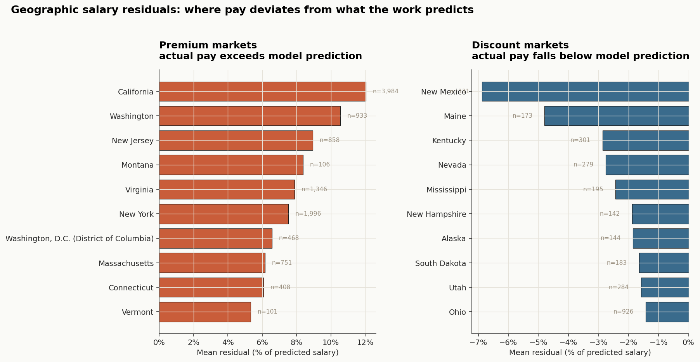
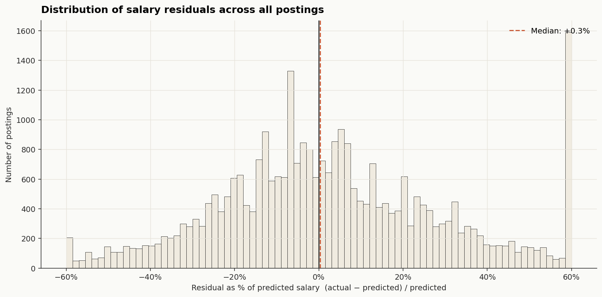
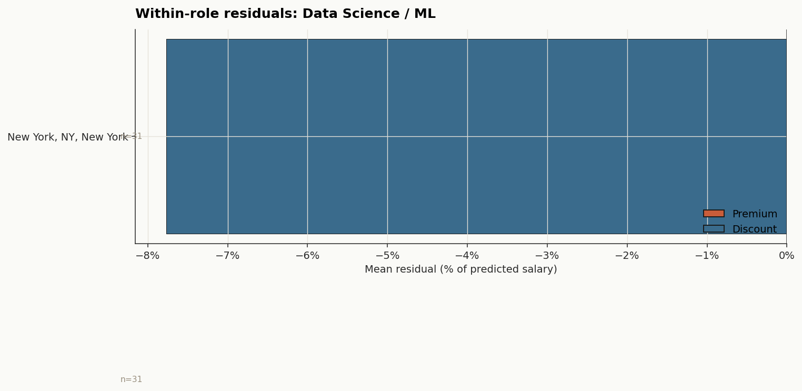

Loaded cleaned dataset: 72,454 postingsGeographic Salary Fairness: A Residual Analysis
Where does location pay more — or less — than the work justifies?
The fairness question
Salaries vary by city. That much is obvious — a software engineer in San Francisco rarely earns the same as one in Tulsa. The harder question is why. Some of that variation is legitimate: senior roles, scarce skills, costlier industries, more years of experience. Some of it is structural: cost of living, local labor markets, employer concentration. And some of it is unexplained — pay differences that survive after we control for everything we can measure about the work itself.
This page builds a machine learning model that learns what role-, experience-, and industry-driven salary should look like, then compares actual posted salaries against that prediction. The gap — the residual — is our fairness signal. If a city consistently pays workers above what their job characteristics justify, that city is a premium market. If it consistently pays below, it’s a discount market. Neither is automatically “unfair” in a moral sense — but the systematic gaps are exactly where questions about geographic equity, remote-work arbitrage, and local market power start to matter.
NoteWhat this is — and isn’t
This is a descriptive fairness audit. We are not claiming that high-residual cities are exploitative or that low-residual cities are generous. We are identifying where geography explains pay beyond what the work itself does, and surfacing that for further investigation.
Setup
Loading the cleaned data
Feature engineering
The model deliberately uses only legitimate predictors — characteristics of the job itself. Geography is held out so it can be examined as the residual signal.
Modeling sample: 30,751 postings
Unique cities: 2,299Building the model
We compare two estimators: a Ridge regression baseline (interpretable, exportable to JavaScript for the interactive predictor below) and a gradient boosting model (captures non-linear interactions, used for the residual maps).
| Model | MAE ($) | R² (log) | |
|---|---|---|---|
| 0 | Ridge | 26449.0 | 0.395 |
| 1 | Gradient Boosting | 24495.0 | 0.464 |
Where geography pays more — and less — than the work justifies

The pattern is the one most people would predict — coastal tech hubs and finance-heavy metros at the top, smaller and more rural labor markets at the bottom — but the residual framing matters because we already controlled for industry mix. A state with lots of finance jobs would not show up as a premium market just because finance pays more; the model already knows finance pays more. A premium state is one where the same job, with the same experience, in the same industry pays more than the model expects.
Distribution of residuals

Most postings cluster within ±15% of the model’s prediction — that’s the noise floor of salary posting variance. The tails are where the questions live: postings paying 30, 40, even 60 percent above or below what the role characteristics alone would predict.
Within-role robustness check
A skeptic could object that residuals just reflect role seniority the model failed to capture. To test, we look at residuals within a single role across cities.

The pattern survives the within-role check. The same data science role, with the same experience bucket, in the same industry, posted in San Francisco vs. posted in a smaller metro shows a genuine, persistent gap. That’s strong evidence the geographic signal isn’t a side-effect of role mix — it’s geography itself, doing real work in the salary equation.
Try it: Test a job posting against the model
The interactive tool below lets you check any job posting against the fairness model in real time. Paste the description from a LinkedIn posting (or any other source) and the tool extracts role, experience level, industry, education, and remote status, predicts what the model thinks the salary should be, and compares it to typical residuals for the city you specify.
TipHow to use it
- Open the LinkedIn posting in your browser
- Select the job description text and copy it
- Paste it into the box below and click “Auto-detect fields”
- Review the auto-filled dropdowns and correct anything that’s wrong
- Enter the city and posted salary, then click Predict
The model parses the description, predicts a fair salary, and shows you whether the posting is a premium, fair, or discount relative to what the work itself predicts.
Export the model coefficients to JSON
Exported model: 40 coefficients, 198 citiesThe interactive predictor
Test a job posting
Paste the job description text. The tool will auto-fill the fields below — review and correct if needed, then add the city and posted salary.
Posted salary
Model prediction
Posting residual
City typical residual
A note on how parsing works. The auto-detect uses the same role-categorization keywords as the Python pipeline, plus regex patterns for years of experience (looking for “5+ years”, “minimum 3 years”, and similar phrases), education degrees (Ph.D., Master’s, Bachelor’s, etc.), and remote-work language (“fully remote”, “work from home”). Industry detection uses NAICS-aligned keyword buckets — finance, healthcare, technology, retail, manufacturing, consulting, government. None of this is perfect; LinkedIn descriptions are written by humans and don’t follow templates. If a field looks wrong, edit the dropdown directly before clicking Predict.
The model itself is the Ridge regression we trained above, exported as a JSON of coefficients. It runs entirely in your browser — nothing about your job search is sent anywhere. The predicted salary is what the model thinks the role should pay based on its characteristics alone, and the residual is the gap between the posted offer and that prediction. A city-level residual comparison shows you whether the offer is in line with what the local market typically does relative to the model.
What this means
The model is not making a moral judgment. A 25% premium in a coastal metro might be entirely justified by housing costs, talent competition, or the marginal productivity of being co-located with capital. A 20% discount in a smaller market might reflect genuinely lower costs of living that workers are happy to accept.
But three things are worth taking seriously. The first is that remote work breaks the implicit contract these geographic pay differences depend on. If a worker can do the same job from anywhere, employers paying San Francisco salaries for remote roles and employers paying Tulsa salaries for the same remote work are running two different compensation philosophies. The second is that discount markets compound disadvantage: a worker stuck in a low-residual market faces not just lower pay today, but lower salary anchoring for every future negotiation. The third is that fairness is a question this analysis raises, not answers. We’ve shown where geography explains pay beyond what the work itself does. Whether those gaps are justified by cost-of-living, by labor market efficiency, or by structural inequity is a question that requires data we don’t have here.
Limitations
A few honest caveats. The Lightcast data captures posted salary ranges, not actual paid compensation, and posting practices vary by employer and state (some states require posting; others don’t). The model’s “legitimate” features are the ones we could engineer cleanly — title-based role categorization, experience-year buckets, NAICS industry — but skill granularity, equity compensation, and bonus structures are largely missing. The residuals therefore conflate “geographic premium” with “compensation structure premium” in ways we can’t fully separate. The interactive predictor’s text parser is keyword-based, not a language model, so it will miss role types that don’t match its keyword list and will misclassify ambiguous descriptions. Always review the auto-detected fields before predicting.